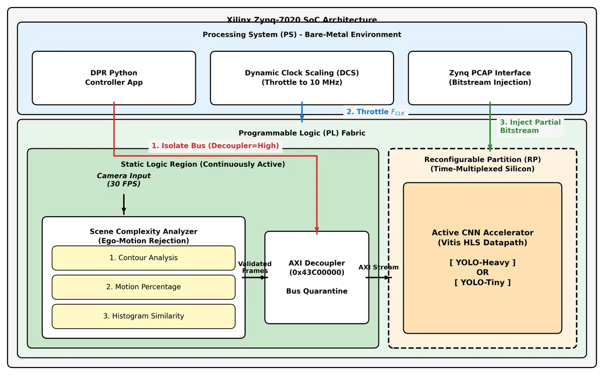
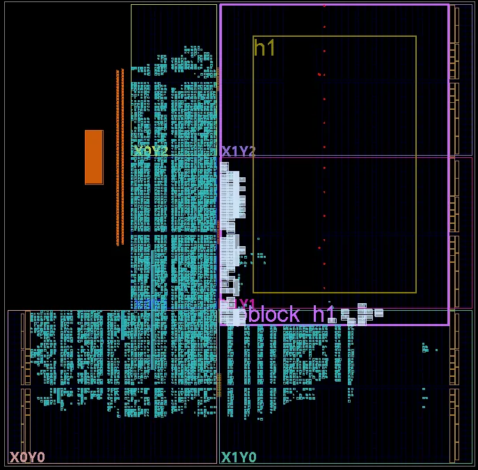
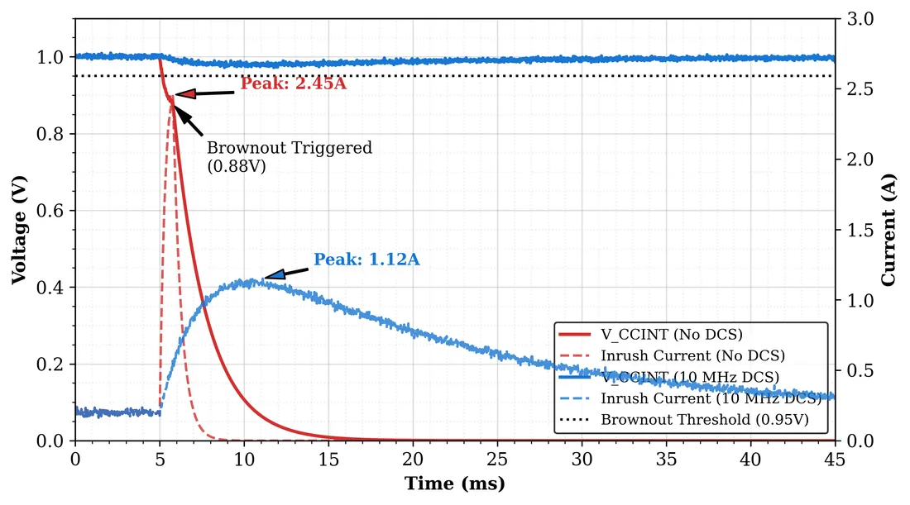
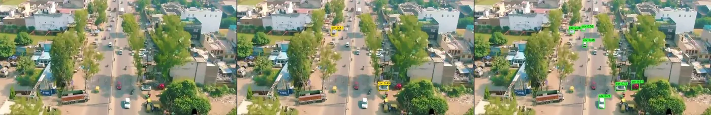
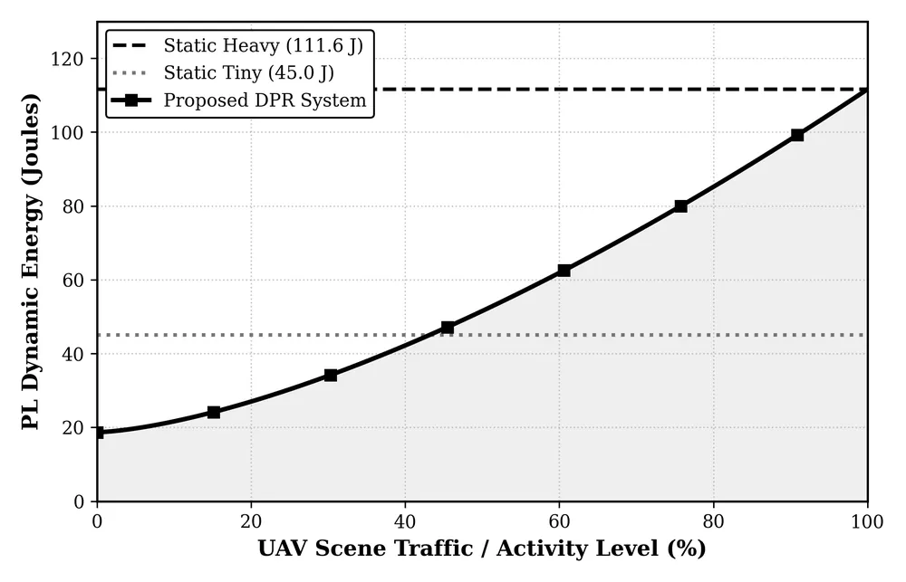
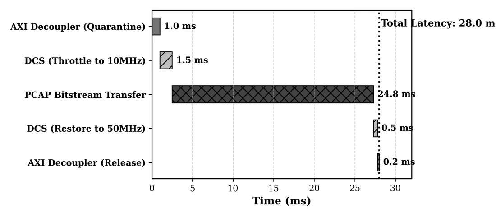

Stable dynamic partial reconfiguration for edge AI
A drone that runs one big CNN on every frame wastes energy on empty sky. Dynamic partial reconfiguration lets the FPGA swap models at runtime: a light Sentry CNN (2.1 ms per frame) while little is happening, and an INT8 YOLOv3-Tiny (8.4 ms per frame, 42.3% mAP@0.5 on VisDrone) when the scene gets busy.
On real hardware, the first ten swaps all failed. Reconfiguring while the processor was still talking to the partition deadlocked the AXI bus, and the inrush current of freshly configured logic pulled VCCINT into brownout. Quarantining the partition behind an AXI Decoupler and throttling its clock from 50 to 10 MHz during the swap fixed both: inrush dropped from 2.45 A to 1.12 A and every swap completed inside one frame.
A predictive, contour-based scheduler decides when a swap is worth it, cutting false triggers from 47.1% to 4.2%.





